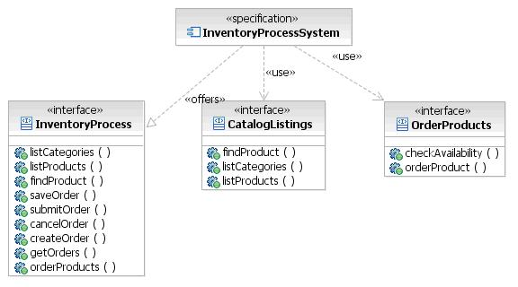

| Guideline: Specifying Components |
 |
|
| Related Elements |
|---|
This guideline explains how to specify components following these steps:
1. Specify Component InterfacesComponents exchange data or use the services of other components through interfaces. Components offer interfaces other components can use, and use the services of other components through the interfaces those components offer. A component can offer one or more interfaces, and one or more components can offer the same interface. The set of all operation signatures that make up an interface, and all interfaces the component offers, characterizes the complete set of requests that a component can fulfill. Show a component's offered and used interfaces diagrammatically using a UML Component Specification Diagram, as shown in Figure 1. This diagram shows a single component with the interfaces it uses, as well as the ones it offers. Initially, you may just name the interfaces, but ultimately these interfaces will include all operations and their signatures.  Figure 1. Component Specification Diagram Elaborate interfaces in stages. Initially, only describe them in terms of the responsibilities that they have. Later, refine them to reflect their full signature, using formal notation such as UML, Interface Definition Language (IDL), or a programming language like Java™. The specification of an interface, including its operation signatures, is a key step in fully specifying a component model. Often, interfaces are not defined to this level of detail. This makes it difficult, if not impossible, to create components that independent teams can work on. The additional time it takes to fully specify an interface is typically outweighed by the time saved avoiding rework due to poorly defined components. Why separate out interfaces from the components themselves?
Group operations that belong together in order to form a well-designed interface. If a client uses one operation of an interface, it should use some (or even most) of the other operations, too. Sets of such operations naturally belong together, and have related effects on the state of the component instance. The number of interfaces and operations assigned to interfaces can vary greatly. It may be appropriate to have a single interface with several operations or multiple interfaces, each with only a single operation. However, avoid interfaces with too many operations (more than 12 for example), because this may indicate that the component has poor cohesion. The notion of a component offering an interface is subtly different from that of a component implementing an interface. An offered interface is a logical-level concept that allows for interfaces to have both operations and associations (with data types). An implemented interface is a physical-level concept that you handle in a later stage of development. Interface implementation is something that a programming language may or may not support. Java, for example, supports interface implementation, but interfaces are only allowed to have operations (and constants). Given a set of well-structured components and their responsibilities, make these responsibilities available to other components by defining interfaces. The approach to use depends on the nature of the component, and the layer of the architecture in which the component resides.
When you identified components, you most likely identified controller components with responsibilities based on the step-by-step flow of functional requirements. Factor out and group these responsibilities as interfaces by doing the following for each component: 1. Identify external responsibilities. Do this by analyzing the dependencies between components. Where one component depends on another to get information or perform processing, it needs to call or send a message to that component. 2. Group like responsibilities together. For example, group all responsibilities for getting or updating data. Group responsibilities for performing some processing function or executing business rules separately. 3. Name an interface. The name should reflect the function of it responsibilities. Having grouped responsibilities, the next step is to identify the actual callable element that executes the function implied by the responsibility. This step will also identify the data that needs to flow when the call is made. 2. Specify Operations and SignaturesFor each interface, specify the operations and their signatures (that is, parameters passed and return values). 1. Look at the collaborations between components in Component Interaction Diagrams. 2. Make decisions identifying the data needed to provide the required functionality. 3. Create structured data types as appropriate. Figure 2 shows a partial Component Interaction Diagram to illustrate these steps.
Figure 2. Partial Component Interaction Diagram Consider the operation 'listProducts' in the preceding diagram:
The following signature results: Repeat this process for each external operation defined for each interface. Architects often question whether they should specify operations to this level of detail, or let the component designer specify operation signatures. The risk of leaving the detail to component designers is that they may make decisions that invalidate the major architectural decisions. 3. Specify Pre- and Post-ConditionsPre- and post-conditions specify the effect of an operation without prescribing an algorithm or implementation.
Pre- and post-conditions are kinds of assertions. An assertion is a Boolean statement that should never be false, and therefore, will be false only if an error has occurred. Assertions are usually only checked during build, either automatically during compilation or manually during test. They are not typically checked during runtime execution. In fact, a program should not assume that an assertion has been checked. Having a pre-condition makes it explicit what the caller is responsible for checking. Without this explicit statement of responsibility, there could be too little or too much checking. Too much checking is as bad as too little because it leads to "program bloat" and makes programs overly complex and difficult to maintain. A pre-condition does not stop the operation from executing. This is the meaning of "Design by Contract" [MEYER97]. Some people use the term pre-condition to describe a situation that needs to be true in order for an operation or process to be executed. This is better termed a guard condition or the triggering event for execution [DODD05]. Pre- and post-conditions essentially form a contract between a client and a supplier. As with any good contract, it entails obligations, as well as benefits, for both parties: with an obligation for one usually turning into a benefit for the other.
The benefits are, for the client, the guarantee that certain properties will hold after the call. For the supplier, the guarantee is that certain assumptions will be satisfied whenever the operation is called. The obligations are, for the client, to satisfy the requirements as stated by the pre-condition, and for the supplier, to do the job as stated by the post-condition (see Figure 3).
Figure 3. Client and supplier obligations and benefits of pre- and post-conditions A pre-condition violation means that the operation caller, although obligated by the contract to satisfy a certain requirement, did not. This is a bug in the client itself: the operation is not involved. An outside observer might criticize the contract as too demanding, but it is too late to argue over the contract. The client did not observe its part of the deal. If there is a mechanism for monitoring assertions during execution, and it detects such a pre-condition violation, the operation should not be executed at all. It has stated the conditions under which it can operate, and these conditions do not hold. Trying to execute it would make no sense. A post-condition violation means that the routine, presumably called under correct conditions, was not able to fulfill its contract. In this case, the bug is in the routine: the caller is innocent. Assertions such as pre- and post-conditions may or may not affect the run-time system. You can treat them as written specifications for how the system should behave. You can test them during the various phases of testing. However, you can also check assertions at runtime, in which case you use some form of exception handling to deal with them. Assertion checking has an impact on performance. Pre- and post-conditions may be expressed either using the formal Object Constraint Language (OCL) [WARMER99], or using natural language. Figure 4 shows an example of a pre- and post-condition using natural language.
Figure 4. Example of pre- and post-conditions In the example above, the operation 'cancelOrder' only guarantees to complete successfully if it receives an existing order number and the order is active. If these two conditions are true, then 'cancelOrder' will guarantee to cancel the order. |


Licensed Materials - Property of IBM |